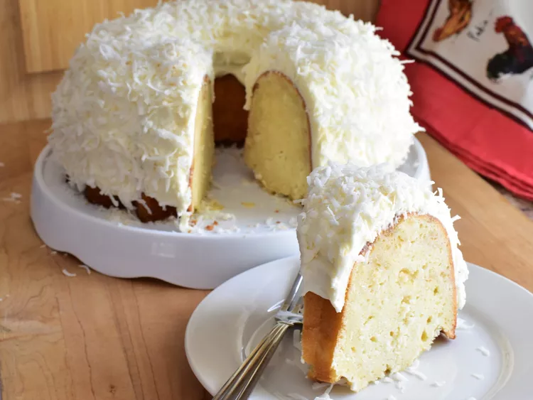

- Tom Cruise Cake -

This is a copycat Tom Cruise cake, aka the white chocolate coconut Bundt cake that Tom Cruise sends every Christmas to a select list of friends — it is definitely worth jumping on a couch for in my opinion!
- Ingredients -
Cake:
- 3 cups all-purpose flour, plus more for flouring the pan
- 1/2 teaspoon salt
- 1/2 teaspoons baking powder
- 3 cups white sugar
- 1 cup unsalted butter, softened
- 6 large eggs, at room temperature
- 1 teaspoon vanilla extract
- 1 teaspoon coconut extract
- 1 cup sour cream
- 2 cups sweetened flaked coconut
- 1 cup white chocolate chips
Frosting:
- 4 ounces cream cheese, at room temperature
- 1/4 cup unsalted butter, softened
- 1 teaspoon vanilla extract
- 1/8 teaspoon salt
- 2 cups powdered sugar
- 2 tablespoons heavy cream
- 1 ½ cups sweetened flaked coconut
- Directions -
- To make the coconut cake: Preheat the oven to 350 degrees F (175 degrees C). Grease and flour a 10-inch Bundt pan.
- Combine flour, salt, and baking powder in a large bowl; set aside.
- Beat sugar and butter together in a large bowl with an electric mixer on medium until light and fluffy, about 5 minutes. Beat in whole eggs, 1 at a time, beating well after each addition. Add vanilla extracts, coconut extract, and sour cream: beat until combined.
- Add flour mixture and mix until just combined; fold in flaked coconut and white chocolate chips.
- Pour batter into the prepared pan and use the back of a spoon to spread batter evenly.
- Bake in the preheated oven until a toothpick inserted into the center of the cake comes out clean, about 1 hour 25 minutes. Allow cake to cool in the pan for 20 minutes before removing to a wire rack to cool completely, about 2 hours more.
- To make the frosting: Add cream cheese, butter, vanilla, and salt to a medium bowl; beat with an electric mixer until smooth. Gradually add powdered sugar and slowly mix until incorporated. Add cream and beat until light and fluffy, about 1 or 2 minutes.
- Frost the top and sides of the cake; lightly press coconut evenly around the outside.